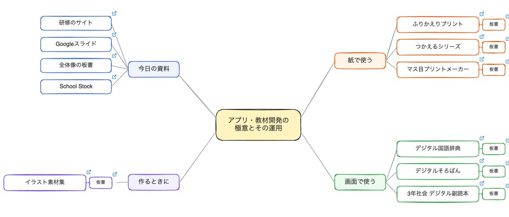

スマートフォンの方は、Googleスライド と School Stock をお使いください。思考ツールボードと研修のサイトは、パソコンで開くと見やすくなります。

今日の地図パソコン向け 思考ツールボード 今日の資料と7つの道具、それぞれの板書がつながっています。四角の右上の印を押すと、その先が開きます。書き足しても、ほかの方の画面には出ません。 ボードを開く 話の概要 今日の話をまとめた文章 School Stock をどう作り、どう使っているかを、あとから読み返せるようにまとめました。 読む 研修のサイトパソコン向け 板書と話す順番 全体像の板書と、7つの道具ごとの話す順番と板書をまとめています。 サイトを開く 研修のスライド Googleスライド 今日のスライドです。後半のページには、質問や感想を自由に書きこめます。 スライドを開く 教材とツールの置き場 School Stock 忙しい先生が、登録も会費もなしで使える教材とツールの置き場です。 School Stockを開くあとで探すときは「School Stock 教材」で検索してください。